포트폴리오
자기 소개
안녕하세요.
저는 하나의 서비스를 한명의 아이와 같다고 생각합니다. 성장 단계마다 필요한 배움이 다르고, 꾸준히 관심을 기울이지 않으면 넘어져 다치기 마련입니다.
서비스에도 각 단계에서 필요한 기술을 적절히 적용하고, 모니터링 도입을 통해 언제 어떤 일이 발생할지 지속적으로 관찰합니다. 또한, 아날리틱스를 활용해 사용자들이 무엇에 관심이 있는지 데이터를 기반으로 파악합니다.
좋은 부모가 되기 위해 꾸준히 배우고 성장하듯,
11년 동안 다양한 서비스를 만들어왔고 계속해서 나오는 기술과 아키텍처에 적응해가며 서비스의 개선과 성능 최적화를 통해 성장함과 동시에 팀과 조직의 성과를 이끌었습니다.
서비스와 함께 성장하며 한 걸음 앞서 준비하고 방향을 제시하려 끊임없이 노력하는,
개발자 박창규입니다.
정보
- Github : https://github.com/talq44 / https://github.com/bejewel-changkyu
- 개인블로그 : https://medium.com/@talq44
기술 스택
gantt
dateFormat YYYY-MM
section Language
Swift :i3, 2018-03, 2025-02
typeScript :a1, 2024-10, 2025-02
typeScript :a1, 2019-04, 2020-01
Objective-c :l5, 2015-08, 2019-02
MFC(c++) :l3, 2014-03, 2015-04
SQL :l2, 2012-09, 2014-01
Android(Java) :l1, 2011-09, 2016-06
section Architecture
MVVM :a1, 2020-05, 2025-02
TMA: a5, 2024-01, 2025-02
MVI :a2, 2022-07, 2025-02
Clean Architecture :a1, 2022-01, 2025-02
VIPER: a4, 2020-06, 2022-06
Ribs: a4, 2020-06, 2022-09
MVC : a3, 2015-05, 2020-12
section UI
SwiftUI : c1, 2023-07, 2025-02
PinLayout/FlexLayout : u3, 2022-03, 2022-07
SnapKit : c3, 2020-01, 2025-01
AutoLayout : c2, 2016-07, 2025-02
Autoresizing Mask : u2, 2015-09, 2017-03
StoryBoard : u1, 2015-09, 2023-01
section Asynchronous
Async/Await: r3, 2022-07, 2025-02
Combine: r2, 2020-02, 2025-02
RxSwift: r1, 2019-07, 2025-02
section Analytics/Ad
AirBridge : s3, 2023-01, 2024-12
Ampltude : s2, 2022-03, 2024-12
Braze : s2, 2021-07, 2024-12
Google Ads: aa2, 2019-11, 2021-06
IGAWorks : aa1, 2017-10, 2021-06
FireBase(GoogleAnayltics) : s2, 2016-12, 2025-02
section Tools
Xcode-cloud: t6, 2022-06, 2025-02
Github-Action: t6, 2022-01, 2025-02
Slack: t5, 2021-07, 2024-12
Jira: t4, 2021-02, 2024-12
Figma: t3, 2020-07, 2025-01
Zeplin: t2, 2018-07, 2025-01
Git: t1, 2016-06, 2025-01
SVN: t0, 2011-09, 2019-02
경력 사항
gantt
dateFormat YYYY-MM
section 정규직
비주얼 :i3, 2021-07, 2025-01
하나모바일 :i2, 2018-01, 2021-06
새움테크 :i1, 2015-05, 2018-01
유니텍 : c1, 2014-07, 2015-04
section 인턴/계약직
강원대학교 :a2, 2011-09, 2013-03
비주얼
구매전환 개선 스크럼
개요
- 목표: 구매전환 개선을 위한 상품상세, 옵션선택, 장바구니 개선
- 기간: 2024.09 ~ 2024.11
- 규모: Android 1, iOS 1, web 1, PO 1, QA 1
- 역할: iOS 메인 개발
주요 기술
- Swift, TMA, Analytics, A/B Test
도전 과제 및 해결 방법
- 장바구니 담는 횟수에 비해 장바구니 화면 진입율이 낮음을 개선
- 상품상세에서 장바구니 담기시 스낵바를 통해 진입 유도
- 옵션 선택화면을 모든 화면에서 사용이 가능하도록 작업
- option 선택 도메인 생성
- 옵션 선택용 Feature Component Layer 모듈 생성
- 이후 홈, 좋아요에 적용
주요 성과
- 상품상세에서 장바구니 진입 0.5% 증가
- 좋아요화면에서 상품 선택 대비, 장바구니 버튼 노출시 구매율 1% 증가
- 홈 타임딜에서 옵션 선택화면 노출시 구매율 유지
- 모두 크게 개선되지 않았지만 상승이 되어 기능 유지
배운점/아쉬운점
- A/B test를 통해 하락하지 않음을 확인하고 대체
- 작업은 진행했으나 유저가 빠져나가고 있던 상황이라 정확한 데이터였는지에 대한 아쉬움 존재
- Funnel 스크럼 덕분에 증가 감소에 대한 명확한 데이터를 수집할 수 있게됨을 확인
App팀 배포열차 도입 스쿼드
개요
- 목표: 배포 관련 사항 결정 및 자동화로 배포 생산성 향상
- 기간: 2024.07 ~ 2024.12
- 규모: Android 1, iOS 1, PO 1, QA 1
- 역할: 스쿼드 리더
주요 기술
도전 과제 및 해결 방법
- 배포 관련 일정 논의 및 결정
- 매주 1회
- 검수 프로세스 월~목
- 심사 제출 금
- 실 배포 화요일
- 배포 자동화
- FeatureFlag 상태가 개발중 -> 작업완료시 자동 내부 배포
- PO / QA 슬랙을 통해 배포 앱 생성 기능 제공
- 금요일 오전 최종 확인용 앱 자동 내부 배포
- 슬랙 리마인더
- 작업 담장자 가이드 문구 자동 노출
- PO / QA 내용 공유
- 포함되는 기능(티켓 + 피쳐플래그) 내용 공유
- 지라 상태 자동화
- 개발 완료시 상태 변경 자동화
- 담당자 지정 자동화
- (실) 배포 완료시 상태 변경 자동화
주요 성과
- 24년 상반기 대비 주당 배포 횟수 21% 증가
- 슬랙 배포 관련 논의 15% 감소
- 피쳐플래그를 통해 잘못된 배포 disable 처리 기능 제공
- 관련 블로그
배운점/아쉬운점
- 유연한 CI/CD를 토대로 빠른 적용
- 하나의 팀으로 정확한 내용 공유
- Store 심사제출까지 자동화 하지 못한 아쉬움
아몬즈 리소스 및 프레임워크 최적화를 통한 용량 개선
개요
- 목표: 아몬즈 앱 용량 개선을 위한 리소스 수정 및 프레임워크 개선
- 기간: 2024.06 ~ 2024.07
- 규모: iOS 2, QA 1
- 역할: iOS 개발 및 리딩
주요 기술
도전 과제 및 해결 방법
- 폰트 삭제를 통한 용량 개선
- 사용하지 않는 폰트 삭제
- 사용량이 적은 폰트 Design System을 토대로 대체
- 사용하지 않는 이미지 삭제를 통한 용량 개선
- 프레임워크 추가 개선
주요 성과
배운점/아쉬운점
- 디자인팀과 디자인시스템 구축 및 지속적 리소스 삭제를 위한 내용 공유
- Static <-> Dynamic 의 차이에 대한 파악
- Static의 중복 적용으로 인한 메모리 향상을 방지하기 위해 TMA의 적극적 적용
- 용량 감소시 업데이트율이 오른다는 내용은 맞지 않았음을 확인
- 사용자들의 자동 업데이트에 대한 비율 재 확인
App팀 브랜치 관리 방식 교체 및 Feature Flag 적용
개요
- 목표: 브랜치 관리 방식 교체 및 피쳐플래그 적용을 통해 작업 및 배포 속도 향상
- 기간: 2024.04 ~ 2024.08
- 규모: Android 3, iOS 3, PO 1, QA 1
- 역할: App팀 리드 및 iOS 메인 개발
주요 기술
- Trunk Based Development(TBD), Feature Flag, Firebase(RemoteConfig)
도전 과제 및 해결 방법
- Github Flow에서도 부족한 방식들이 존재
- TBD와 명확한 가이드를 공유
- 구글엔지니어는 이렇게 일한다 스터디를 주도하며 거대한 구글에서도 사용하는 방식임을 공유
- 언제든지 배포가 가능한 메인 브랜치의 적용
- FeatureFlag를 병행해 메인 개발 진행
- Firebase RemoteConfige의 Release를 사용해 무료방식을 채택
주요 성과
- 23년 대비 배포 횟수 30% 증가
- 24년 상반기 잘못된 배포 3회 발생했으나 피쳐플래그로 모두 off를 진행해 추가적인 배포가 진행되지 않음
- 관련 블로그
배운점/아쉬운점
- 팀 전반적인 발전을 위해 지속적 스터디가 필요함을 느끼고 주도
- 타 파트에도 공통 적용을 위해 공유를 실시했으나 받아들여지지 않아 App팀만 적용
- 피쳐플래그를 기능성으로 묶기위해 노력했으나 받아들여지지 않아 Firebase로 구현
Funnel 스크럼
개요
- 목표: 모든 플랫폼 전자상거래 아날리틱스 개선 및 추가 적용
- 기간: 2024.04 ~ 2024.12
- 규모: Android 1, iOS 1, web 1, PO 1, QA 1, 마케팅 1, 운영 1
- 역할: 스크럼 리더 및 iOS 메인 개발
주요 기술
- Modular Architecture
- Google Analytics, Braze, Amplitude, Airbridge
도전 과제 및 해결 방법
- Analytics 이벤트가 체계적으로 관리되지 않음
- Funnel이 더 길어지지 않음
- 목록 전자상거래 이벤트를 추가해 퍼널의 파악이 더 높게 가능하도록 함
- view_item_list, select_item을 모든 플랫폼에 적용
주요 성과
- 모든 플랫폼 전자상거래 데이터 신빙성 100% 달성
- 목록 전자상거래 97% 적용
- 관련 블로그
- https://medium.com/bejewel/유저-마음에-닿기를-analytics-개선기-0-ios-analytics-module-5d669dd07af1
- https://medium.com/bejewel/유저-마음에-닿기를-analytics-개선기-1-ios-analytics-module-50a6da62a1a9
- https://medium.com/bejewel/유저-마음에-닿기를-analytics-개선기-2-개발자가-이해하기-2fc0e6607e6b
배운점/아쉬운점
- 데이터 파이프라인의 필요성에 대해 팀 전반적인 이해도 향상
- 조회, 장바구니, 구매의 전자상거래 파악이 가능해지며 콘텐츠 유지에 대한 데이터로 활용
- KPI의 근거 자료로 활용됨
- 장바구니에서의 구매 트래킹에 대해 지속적 작업 요청을 했으나 아쉽게 진행되지 않음
- 개발자가 아닌 스크럼 리딩을 통해, 개발 속도의 느림을 확인
- QA 와 개발이 교차적으로 진행 가능한 프로세스 도입
- 추후 배포열차 도입으로 이어짐
아몬즈 아키텍처 개선 Tuist 적용 및 TMA 구조 확립
개요
- 목표: Tuist 적용 및 TMA구조 확립을 통한 생산성 향상
- 기간: 2024.04 ~ 2024.12
- 규모: iOS 3, QA 1
- 역할: iOS 개발 및 리딩
주요 기술
도전 과제 및 해결 방법
- Application / Feature / Domain / Core / Shared 계층 분리
- 모듈별 구조 확립 및 테스트 코드 작성 유도
- 모듈생성시 스크립트를 통해 동일한 구조로 자동 생성
flowchart TD
FeatureExample --> Feature
FeatureExample --> FeatureTesting
Feature --> FeatureInterface
FeatureTests --> Feature
FeatureTests --> FeatureTesting
FeatureTesting --> FeatureInterface
주요 성과
- CI 빌드테스트 속도 50% 감소(12분 -> 5분)
- 개발속도 10% 증가(모듈별 빌드)
- 테스트 커버리지 13% 증가
- 머지 컨플릭 비율 감소(.xcodeproj/* ignore)
- 관련 블로그
배운점/아쉬운점
- 명확한 계층정의로 협업 맴버 공통된 형태의 모듈 개발
- 모듈별 테스트가 추가되어 안정성 향상
- project 파일이 더이상 추가되지 않아 코드 형상 관리가 간편해짐
- 모듈별 interface로 더 명확한 캡슐화
- 클린아키텍처, cocoapods -> SPM으로 모두 변경, 모듈 레이어 등 선행이 필요한 업무가 늦어지며 너무 늦게 반영한데에 대한 아쉬움
- 마이그레이션 하며 기존 코드도 지우는 프로세스를 확립하지 못함
- 80% 이상 모듈로 대체하려 했으나 회사 사정으로 모두 완수하지 못한데에 대한 아쉬움
Analytics 모듈 구축 및 적용
개요
- 목표: Analytics 모듈 분리를 통해 유동적 관리 및 이벤트 체계화/자동화
- 기간: 2023.11 ~ 2024.03
- 규모: iOS 1, PO 1, QA 1, 마케팅 1
- 역할: iOS 메인 개발
주요 기술
- Modular Architecture
- Google Analytics, Braze, Amplitude, Airbridge
도전 과제 및 해결 방법
- Analytics 이벤트가 체계적으로 관리되지 않음
- 명확한 기준점 결정(Google Analytics)
- 내부 코드가 CSV 형태로 output 할수 있도록 구성
- Analytics Core Module만의 별도앱으로 배포
- Braze, Amplitude의 업데이트가 일어나지 않고 있음
- SDK 업데이트시 충돌이 발생
- Long Lived 브랜치로 별도 분리해 작업 진행
- 메인 브랜치에 작업물이 합쳐질때마다 지속적 업데이트 실시
- 모든 이벤트에 대한 대체 필요
- 기존 TrackingUtils라는 파일에서 우선적 대체
- 이상이 없음을 판단 후 Analytics 모듈을 사용하도록 점진적 대체
주요 성과
- 비대해진 TrackingUtils의 의존성 모두 제거 및 삭제 완료
- 공통된 protocol로 SDK추가의 용이성 확보
- Braze(구 Appboy), Amplitude SDK 성공적 적용
- 현재 적용중인 Analytics를 파악할 수 있는 데이터 지속적 공유
- 추후 아날리틱스 사용을 취소할때도 1시간 안에 작업
- 관련 블로그
- https://medium.com/bejewel/유저-마음에-닿기를-analytics-개선기-0-ios-analytics-module-5d669dd07af1
- https://medium.com/bejewel/유저-마음에-닿기를-analytics-개선기-1-ios-analytics-module-50a6da62a1a9
배운점/아쉬운점
- 긴 생명주기를 가진 브랜치로 작업했지만, 비슷한 작업이 일어난다면 Feature Flag로 작업 할것으로 예상
- 외부 SDK를 캡슐화 한후 최소한의 기능만 외부 노출하도록 작업
- 대체가 모두 완료되면 이후 SDK를 업데이트하는 방식으로 진행할 예정
- 아날리틱스 대체를 통해 서비스 전반적인 이해도가 오름
- 이후 신규 입사자 온보딩에도 아날리틱스 이벤트를 통해 서비스 이해도 향상 주도
- 타 플랫폼의 아날리틱스 모듈화를 계속 설득했으나 아쉽게도 진행되지 못함
cocoadpos -> SPM 이전
개요
- 목표: 모듈 분리와 Tuist 적용을 쉽게 하기 위한 Cocoapods -> SPM 이전
- 기간: 2023.06 ~ 2023.11
- 규모: iOS 1, PO 1, QA 1
- 역할: iOS 메인 개발
주요 기술
- Modular Architecture, SPM
도전 과제 및 해결 방법
- 홈 도메인에 지속적인 기능 추가와 검증을 위한 모듈 분리
- Common Layer와 Shared Layer의 분리
- API 모듈 분리
- 이후 Feature Layer에 홈 도메인 모듈 분리
주요 성과
- CI 시간 단축
- 관리되지 않던 SDK 버전 업데이트 진행
- Tuist 쉽게 적용 할 수 있는 토대 완성
배운점/아쉬운점
- 버전 향상이 필요한 이유에 대해 개발자를 제외한 전반적인 팀원과 내용 공유
- 최신 버전 유지에 대한 공감대 형성 및 자연스러운 업데이트 문화 장착
홈 모듈 분리
개요
- 목표: 홈 도메인의 빠른 기능 개발 및 검증을 위한 모듈 분리
- 기간: 2023.04 ~ 2023.05
- 규모: iOS 1, PO 1, QA 1
- 역할: iOS 메인 개발
주요 기술
- Modular Architecture, Coordinator 패턴, Snapshot test
도전 과제 및 해결 방법
- 홈 도메인에 지속적인 기능 추가와 검증을 위한 모듈 분리
- Common Layer와 Shared Layer의 분리
- API 모듈 분리
- 이후 Feature Layer에 홈 도메인 모듈 분리
- 홈에서 화면 이동
- 모든 화면 이동을 해당 모듈로 옮기는데에 한계가 존재
- Coordinator 패턴 도입
- Coordinator를 Application Layer에서 주입하는식으로 대체
주요 성과
배운점/아쉬운점
- 우선 모듈이 분리되고 독립적이 되며 지속적인 마이그레이션이 가능한 형태로 발전
- 이후 신규 입사자가 담당자가 되어도 개발속도 유지
Swagger -> Swift 파일 전환 자동화
개요
- 목표: User API 문서 플랫폼 언어 파일 자동생성을 통한 생산성 향상
- 기간: 2023.04 ~ 2023.06
- 규모: iOS 1, back-end 1, Android 1
- 역할: 파트간 협의 담당 및 메인 개발
주요 기술
- Swift, OpenAPISpec 3.0, RestfulAPI, Moya, Alamofire, yaml
도전 과제 및 해결 방법
- OAS 3.0기준 Swagger 문서를 UserAPI모듈로 생성하기
- SwaggerCodeGen은 단순 DTO만 생성해서 탈락
- 직접 대체할수 있도록 Swift로 제작
- 네트워크 모듈 형식 결정 필요
- TMA 외부 노출 인터페이스 생성
- 내부 형태는 Moya 형식으로 사용하기로 결정
- Rx 비율을 낮추기 위해 Asyn/Await으로 결정
- 팀원 동일한 형식 사용
- 별도 앱으로 생성해 작업시 변경되면 담당자가 덮어씌우도록 결정
주요 성과
- API관련 이슈 90% 감소
- 디코딩 에러 파악율 100% 달성
- 작업속도 10% 이상 증가
- API관련 논의 30% 감소
- 관련 블로그
배운점/아쉬운점
- 사람은 실수를 할 수 있어도, 기계는 실수하지 않는다.
- 자동화된 테스트코드 생성이 안정성 증가에 큰 도움을 줌
- User API가 변경되면 Github에서 PR이 생성되서 대체하고 싶었으나 리소스 부족으로 포기
- 당시 Feature Flag가 확립되지 않아, 서비스에 영향을 끼칠 우려가 있어 미룸
- 파이썬으로 코드를 대체해 Github Action으로 만들 구상까지 하고 다른 업무로 포기
홈 라이브 커머스 추가
개요
- 목표: 홈 화면 라이브 커머스 도입
- 기간: 2023.02 ~ 2023.03
- 규모: Android 1, iOS 1, bacek-end 1, PO 1, UX 1
- 역할: iOS 메인 개발
주요 기술
- ShopLive, Modular Architecture, A/B Test, Google Analytics
도전 과제 및 해결 방법
- 홈 라이브 커머스 도입
- 리소스 부족으로, 외부 SDK를 도입하기로 결정
- 성과 측정 데이터 추가
- Google Analytics의 화면 유지시간을 지표로써 건의 및 채택
- 홈 전체의 선택 데이터 내부 API에서 Analytics로 확대
주요 성과
- 홈 유지시간 10% 증가
- 홈 상품상세 이동 5% 증가
배운점/아쉬운점
- 라이브커머스 도입을 통해 성과를 확인했으나 지속적 관리가 되지 못해 효과성이 떨어짐
- 캐쉬관련 이슈가 발생했었으나 지속적 모니터링으로 빠르게 해결
- A/B 테스트를 통해 지속적 확인을 하며, Feature flag 도입시 근거 자료로 사용
App팀 CI/CD 스쿼드
개요
- 목표: CI/CD를 위한 브랜치 룰 설정 및 CI/CD 자동화 적용
- 기간: 2023.01 ~ 2023.08
- 규모: Android 2, iOS 2
- 역할: App팀 리드 및 CI/CD 결정 / 파트간 내용 공유
주요 기술
- Git Flow, Github Flow, Github Action, Xcode Cloud
도전 과제 및 해결 방법
- 비주얼만의 브랜치 관리 방식을 사용해 단순화 필요
- CI(build-test) 적용 범위
- 코드 병합을 위해 통과가 선행되어야 병합이 가능하도록 protection rule 설정
- 주단위 자동화된 테스트 진행
- 계층 이동마다 통과가 선행되어야 병합이 가능하도록 protection rule 설정
- CD(지속적 전달/배포)을 위한 내용 정리
- 스킴 설정을 기본으로 설정해 잘못된 심사제출이 되지 않도록 설정
- 배포 프로세스를 Xcode Cloud에 대부분 넘겨 관련 리소스 투입하지 않음
주요 성과
- 개발속도 증가
- 버그율 감소
- 심사 제출 시간 30% 감소
- 2시간 이상 걸리던 심사제출 프로세스를 30분 이내로 축소
- 관련 블로그 작성
- https://medium.com/bejewel/자동화를-향한-여정-1-브랜치-전략-수립-a687342ad711
- https://medium.com/bejewel/자동화를-향한-여정-2-ci-cd-workflow의-이해와-시점에-대한-정리-c69ea3ebf313
- https://medium.com/bejewel/자동화를-향한-여정-3-자동화-배포-e8df29884b79
- https://medium.com/bejewel/자동화를-향한-여정-4-빌드-테스트의-자동화-609ff88581be
배운점/아쉬운점
- 사람이 많을 수록 체계는 단순화가 필요함을 느낌
- 모두가 모든것을 알지 못해도 되도록 프로세스의 단단함의 필요성을 느낌
- Git Flow도 복잡해 추후 Github Flow, TBD로 대체
- 릴리즈 노트 및 슬랙 공유의 불편함을 느낌
상품상세 마이그레이션 및 아날리틱스 개선
개요
- 목표: 상품상세 코드 개선 및 유저행동 추적 개선
- 기간: 2022.12 ~ 2023.02
- 규모: Android 1, iOS 1, PO 1, QA 1
- 역할: iOS 메인 개발 및 아날리틱스 주도
주요 기술
- Firebase, GoogleAnalytics
도전 과제 및 해결 방법
- API를 통해 추적되는 아날리틱스 확인에 어려움 발생
- Google Analytics로 유저 행동 로그 전송 추가
- Action 체계화
- Android, iOS, web 행동 로그 체계화
- 동일한 값을 수집하며 플랫폼을 통해 구분되도록 개선
- 상품상세내 크래쉬 개선
- tableView index이슈로 지속적인 크래쉬 발생
- tableView로 구성되어 있던 UI를 일부 stackView로 개선
주요 성과
- 상품상세 내 유저 행동 99% 추적
- Crash 미발생율 향상 (99.8% -> 99.9%)
배운점 아쉬운점
- 유저 행동 추적을 위한 아날리틱스 체계화의 필요성 대두
- 아날리틱스 모듈화 및 아날리틱스 스쿼드 리드 진행
- 개발자의 역할뿐만 아니라 개선을 위한 주도적 리딩 시작
카테고리 세분화
개요
- 목표: 카테고리 및 카테고리 상세화면 세분화 및 아날리틱스 추가
- 기간: 2022.11 ~ 2022.12
- 규모: Android 1, iOS 1, PO 1, QA 1
- 역할: iOS 메인 개발
주요 기술
- A/B Test, Coordinator 패턴, 모듈화
도전 과제 및 해결 방법
- 카테고리 노출 세분화를 데이터 검증 후 개선
- 데이터 측정의 필요성
- analytics 일부 적용
- 선택에 대한 체계화 진행
주요 성과
- 기존 A보다 세분화된 화면인 B에서의 진입률 -15% 확인
- 아몬즈 유저의 경우 아이쇼핑의 비중이 높다는 데이터적인 검증 실시
배운점/아쉬운점
- A/B 테스트와 빠른 개발을 통해 기능 테스트의 필요성을 배움
- 더 나은 기능을 제작하더라도 실패할 수 있다는 교훈을 얻음
- 이후 2주내로 제작 및 배포 후 A/B테스트를 하는 스크럼들에 도움
- 더 쉽게 원복하기 위한 Feature Flag의 필요성에 대해 지속적 공유
Clean Architecture 도입 및 개선
개요
- 목표: Presenter / Domain / Data 분리를 통한 계층 명확성 향상
- 기간: 2022.11 ~ 2023.09
- 규모: Android 2, iOS 3, PO1, QA 1
- 역할: App 팀 리드 / 클린아키텍처 스터디 주도 / 도메인 계층 생성 메인 개발
주요 기술
- Clean Architecture, Snapshot Test
도전 과제 및 해결 방법
- 클린아키텍처에 대한 전반적인 지식 부족
- 전체 프로젝트에 대한 적용의 어려움
- ViewModel 마이그레이션이 완료된 부분에 한해 적용 시작
- ViewModel에서 Domain/Data 부분 분리를 우선적으로 시작
- 명확한 계층 분리에 대한 의견 대립
- PO가 이야기하는건 Domain, Back-end가 이야기하는건 Data, UX가 이야기하는건 Presenter로 단순화해 내용 공유
- 비지니스 로직에 대해, 크게 바뀌지 않으면서도 중요한 부분이란 인식을 학습시킴
- 마이그레이션이 부족한 화면의 경우 DTO에 너무 강하게 묶임
- DTO와 ViewState의 분리에 대해 강조 후 서로 다름을 인지시키도록 학습
- 스냅샷 테스트를 통해, ViewState로 대체해가면서도 안정성있게 작업할 수 있도록 테스트코드 우선


주요 성과
- 버그율 5% 감소
- 작업속도 5% 증가
- Android, iOS 공통 도메인 로직 생성
- 관련 블로그
배운점/아쉬운점
- Data에 휘둘리지 않는 작업이 가능해짐
- Backend-Client 동시 작업이 가능해짐
- 개발자간의 대화보다도 중요한 Domain의 중요성에 대해 팀적 공유
- 추가) Domain Driven Design(DDD) 스터디 추가 진행
- 추가) Design First 도입
아몬즈 회원 가입 개선
개요
- 목표: 회원 가입 플로우에 대해 개선해 유저 진입율 향상
- 기간: 2022.09 ~ 2022.11
- 규모: Android 2, iOS 2, web 2, Designer 1, PO 1, QA 1
- 역할: iOS 메인 개발
주요 기술
도전 과제 및 해결 방법
- 회원가입 및 로그인 화면을 어느화면에서도 띄울수 있도록 제작
- 회원가입시 혜택 이미지 변경
- Config API요청. 다만 실행되지 않음
- Firebase RemoteConfig를 통해 Image URL을 지속해 바꿀수 있도록 가이드
- 회원가입시 정보 입력에 대한 조건
- 안드로이드, iOS, Web 모두 동일한 정규식 사용하도록 가이드
- Firebase RemoteConfig를 통해 동일한 정규식을 사용하도록 함
- 회원가입 확장가능성 추가
- 회원가입 도메인 모듈을 interface화해, SNS provider를 쉽게 추가할 수 있도록 제작
주요 성과
- 회원가입율 15% 증가
- 다운로드 수 10% 증가
배운점/아쉬운점
- 로그인화면의 경우 Present형 노출을 요청했으나 받아들여지지 않음
- 추후 HIG스터디를 진행해 공통된 UI에 대한 방향성 얼라인 주도
- Coordinator 패턴 도입을 통해 화면 이동을 화면에서 ViewModel류로 분리 시작
아몬즈 사용성 개선
개요
- 목표: UI 최신화를 위한 레거시 코드 개선 및 디자인 시스템 일부 도입
- 기간: 2022.06 ~ 2022.10
- 규모: Android 1, iOS 1, web 1, Designer 1, PO 1, QA 1
- 역할: iOS 메인 개발
주요 기술
- Design System, Component UI, Snapshot Test
도전 과제 및 해결 방법
- UX 최신화를 위한 좌우간격 변경 및 동일 컬러 사용
- Color 및 간격에 대한 체계화를 통해 시스템화 진행
- UI에 대한 지속적 확인 필요성 요청
- snapshot test를 추가하여 자동화된 테스트 추가
주요 성과
배운점/아쉬운점
- 리소스상 디자인시스템화를 일부만 진행해 전체에 대한 적용을 하지 못한데에 대한 아쉬움
- 체계화를 더 진행했어야 하나, 모든 플랫폼을 설득하지 못한데에 대한 아쉬움
취소 반품 교환 리뉴얼
개요
- 목표: 취소/반품/교환 화면 리뉴얼
- 기간: 2022.03 ~ 2022.05
- 규모: Android 1, iOS 1, web 1, back-end 1, Designer 1, PO 1, QA 1
- 역할: iOS 메인 개발
주요 기술
- Design System, Component UI, Snapshot Test
도전 과제 및 해결 방법
- 취소, 반품, 교환의 테스트에 대한 어려움
- 공통된 UI를 사용중에 있어 지속적 이슈 발생
- 취소, 반품, 교환 용 UI를 별도 분리
- 상품 목록형 Item과 취/반/교는 다른 도메인으로써 다르게 생성하도록 가이드
주요 성과
- 테스트커버리지 5% 증가
- 버그 발생율 2% 감소
배운점/아쉬운점
- 컴퍼넌트별 UI제작에 대해 Android, Web파트와도 공유 및 주도 했으나 결국은 iOS만 진행
- 클린아키텍처 도입을 이어가기 위해 도메인 모듈의 통일성을 주도 했으나 Android 파트와 진행
ReactorKit을 활용한 ViewModel 마이그레이션
개요
- 목표: MVVM 구조 도입 및 ReactorKit 적용을 통한 인터페이스 화(마이그레이션)
- 기간: 2022.01 ~ 2022.10
- 규모: iOS 2, PO 1, QA 1
- 역할: iOS 파트 리드 및 개발, ReactorKit 스터디 진행, 파트간 조율
주요 기술
- ReactorKit, MVVM, RxSwift, Action/State
도전 과제 및 해결 방법
-
Input/Output 패턴보다 더 명확한 Action/State로 변경

-
TDD에 어울리도록 Action/State를 우선 정의 및 테스트코드 작성후 작업하도록 가이드
-
스크럼 진행시 해당 화면을 마이그레이션 하도록 장려
- 타 파트와도 일정 관련하여 전달 및 Action/State 공유
- 기획서와의 매칭으로 정확한 동작에 대해 공유
-
DTO에서 State로 계층 분리
- 추후 Clean Architecture를 적용하며 추가 개선
주요 성과
- 전체 페이지의 60% ReactorKit으로 대체
- ReactorKit으로 대체한 화면의 Action당 테스트코드 0.7개 생성
- 테스트커버리지 15% 향상
- 버그 발생율 30% 감소
- Analytics 개선 작업시 작업속도 타 플랫폼 대비 40% 빠르게 작업
배운점/아쉬운점
- Action -> State로 단방향 흐름이 되며, 복잡한 기능은 없음을 다시 한번 경험
- 페이지별 분리가 아닌, 컴퍼넌트별 모듈 분리로 진행했다면 더 빠른 모듈 분리가 진행되었겠으나, iOS만 진행되어 페이지 단위로 한정
- 추후 모듈별 상세 분리를 진행하며 추가 분리 가능해짐
- Android, iOS, (mobile)Web 모두 비슷한 로직임에도 서로 대화없이 진행됨에 대한 아쉬움
- Reactive Native, Flutter의 도입에 대해 논의 했으나 미뤄짐
- 화면이 Rx에 강하게 묶여 Rx의존적인 구조가 됨
아몬즈 홈 리뉴얼
개요
- 목표: 홈에 사용중인 타입 개편 및 서브 홈 제작
- 기간: 2021.11 ~ 2022.03
- 규모: Android 2, iOS 2, web 2, back-end 2, PO 1, QA 1
- 역할: iOS 메인 개발
주요 기술
- Clean Architecture, RestfulAPI, ServerDriven UI, ReactorKit
도전 과제 및 해결 방법
- 타입은 있으나 사용하지 않는 타입들 삭제
- 연속성 있는 배포를 위해, 정의되어있지 않은 타입은 버리도록 전략 설정 유도
- 타입별 UI 테스트를 위한 SnapShot Test 추가
- StoryBoard로 제작되어있던 UI를 Code Base로 대체
- 두명이 동시에 개발을 진행하게 되어, 담당 분리
- 최초 클린아키텍처를 도입해, Presenter / Domain / Data 영역 분리
- Domain의 개발 메인 담당
- DTO와 ViewState에 대한 분리 실시
주요 성과
- 오늘출발 출시 와 함께 22년 상반기 연말 MAU 50만 유지
- Crash 안정화 (99.5% -> 99.8%)
- SnapShot 테스트 추가에 따른 지속적 홈 리팩토링 진행
배운점/아쉬운점
- 클린아키텍처 도입의 이유를 어느정도 증명하며, 팀 전반적인 도입의 계기가 됨
- 다만 완벽하게 클린아키텍처를 알지 못한채 적용해 명확한 계층 분리가 되지 않음
- Data(API)와 View간의 완벽한 분리가 일어나게 되며, 지속적 마이그레이션 및 리팩토링의 가능성을 만들게됨
- API값을 받되 Domain에서 버리는 정책을 결정해 추후 A/B테스트와 타입 추가를 하면서도 연속성 있는 배포가능성 엶
- 1달에 1번 일어나던 배포 횟수를 줄일 수 있게됨
MVC -> MVVM 개선
개요
- 목표: MVC구조로 인해 발생하는 유지 보수성 하락 개선
- 기간: 2021.10 ~ 2021.12
- 규모: iOS 2, PO 1, QA 1
- 역할: iOS 파트 리드 및 메인 개발
주요 기술
도전 과제 및 해결 방법
- MVC로 화면에 있는 로직을 ViewModel로 이관
- 함수로 정의되어있던 부분을 Input/Output 패턴적용
주요 성과
- 3개의 페이지에 적용
- Crash율 0.5% 상승
- 버그율 10% 상승
배운점/아쉬운점
- 업무 파악 전 무리한 적용으로 안정성 하락
- 테스트 코드 필요성 확인
- 팀원간 협업 및 내용 공유 부족함을 실감 이를 위한 명확한 아키텍처/패턴 통일 필요성 확인
아몬즈 풀필먼트(오늘 출발) 추가
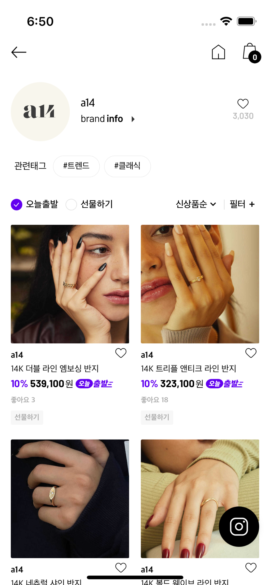

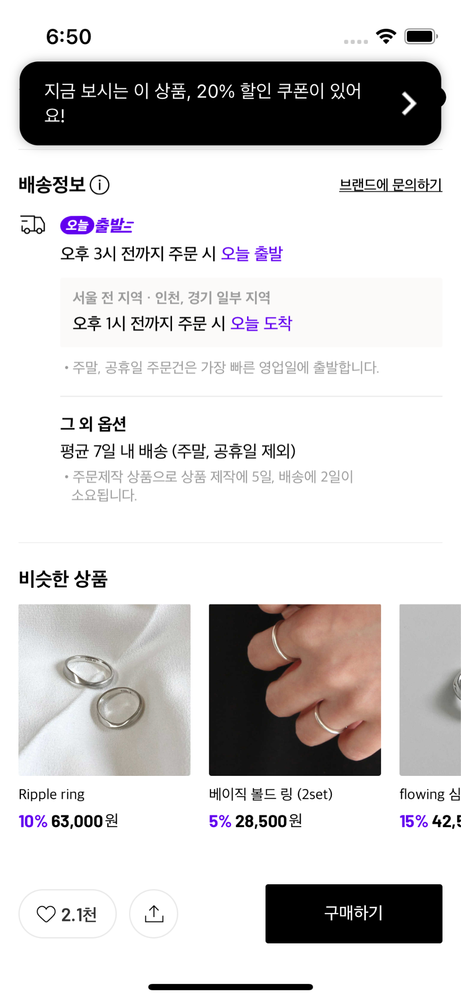
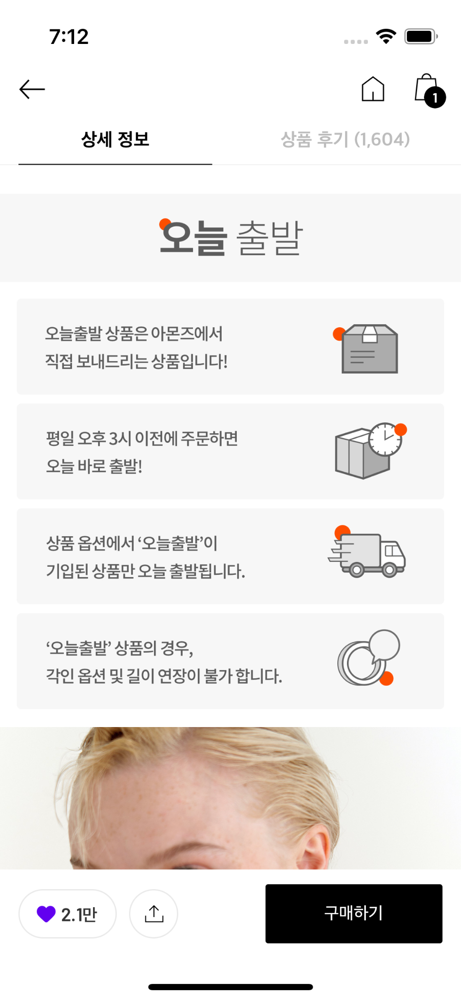
개요
- 목표: 상품 목록 노출, 필터 추가, 상세페이지 오늘출발 노출을 통한 풀필먼트 기능 추가
- 기간: 2021.09 ~ 2021.11
- 규모: Android 1, iOS 1, web 1, back-end 1, PO 1, QA 1
- 역할: iOS 메인 개발
주요 기술
- Swift, Design System, Snapshot test, SnapKit
- (Domain) Home, Category, Search, Coupon, Brand, Product Detail
도전 과제 및 해결 방법
- 모든 목록에 노출되는 상품에 오늘출발 뱃지 추가
- Storyboard로 작업되어 있던 Cell을 Code Base UI로 대체
- 동일한 Item은 동일한 UI가 되도록 체계화
- Cell의 Snapshot test 추가
- 목록에 오늘출발 필터 추가
- 상품목록 CollectionView에 extension을 통한 필터 기능 추가
- 추후 공통 목록 UI로 대체
- 상품상세 오늘출발 UI 추가
- Storyboard로 제작되어있던 Header 중 일부 CodeBase로 대체
- 점진적 UI 개선 방향성에 대한 App팀 공유
주요 성과
배운점/아쉬운점
- 팀원간의 협업을 시작하며 Storyboard 사용 축소
- 머지 컨플릭을 줄이기 위해 담당 도메인 분리
- 일부 디자인 시스템화를 통해 유지보수성 향상
하나모바일
더티켓

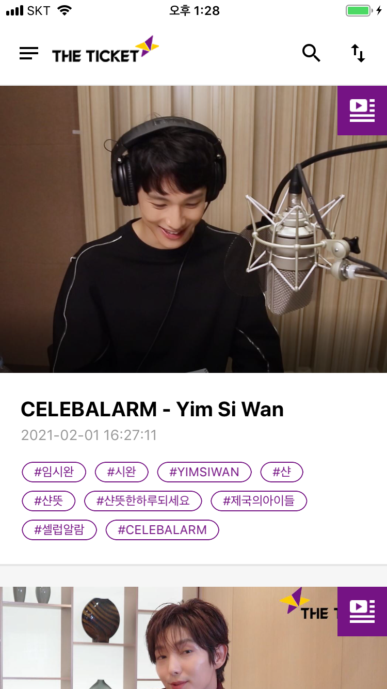

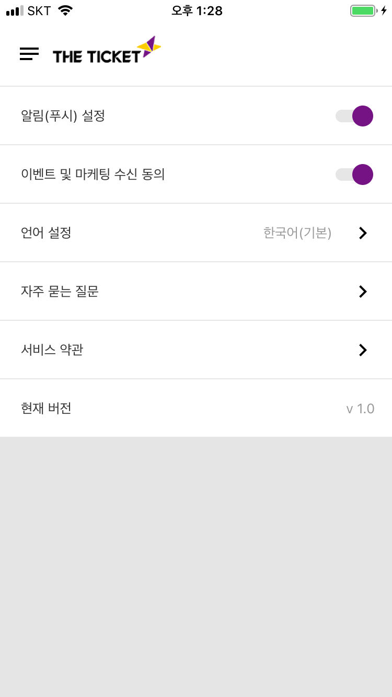
개요
- 목표: 티켓 예약 내역 및 이벤트/관람 정보를 확인 가능한 서비스 제공
- 규모: Android 1, iOS 1, web 1, back-end 1
- 역할: iOS 메인 개발
주요 기술
- Alamofire, Firebase, RxSwift, RxCocoa, RxGesture
주요 성과
- 메인 페이지 서버 드리븐 UI 구성 및 제공
- 상세페이지 커스텀 설정이 가능한 UI 제공
- SNS를 통한 간편 로그인 기능 제공
- Rx를 활용한 MVVM구조 프로젝트 작성

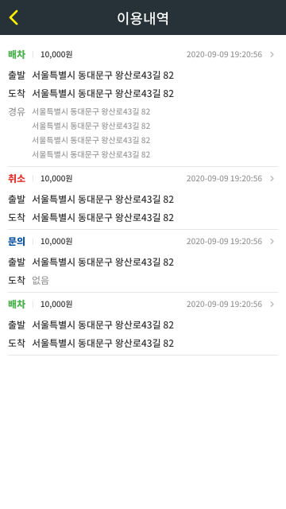

개요
- 목표: 위치좌표 및 모션 캡쳐를 활용한 대리운전 앱
- 규모: Android 1, iOS 1, back-end 1
- 역할: iOS 메인 개발
주요 기술
- Alamofire, NMapsMap(네이버맵), Firebase
- RxSwift, RxCocoa, RxGesture
주요 성과
- 네이버 맵을 이용한 현재 위치 표현
- 별도 상세 접수화면에서 추가 사항 기입 가능
- Rx를 활용한 MVVM구조의 프로젝트 작성
- 위치좌표의 정확성에 따른 알럿창 구분
두줄운세
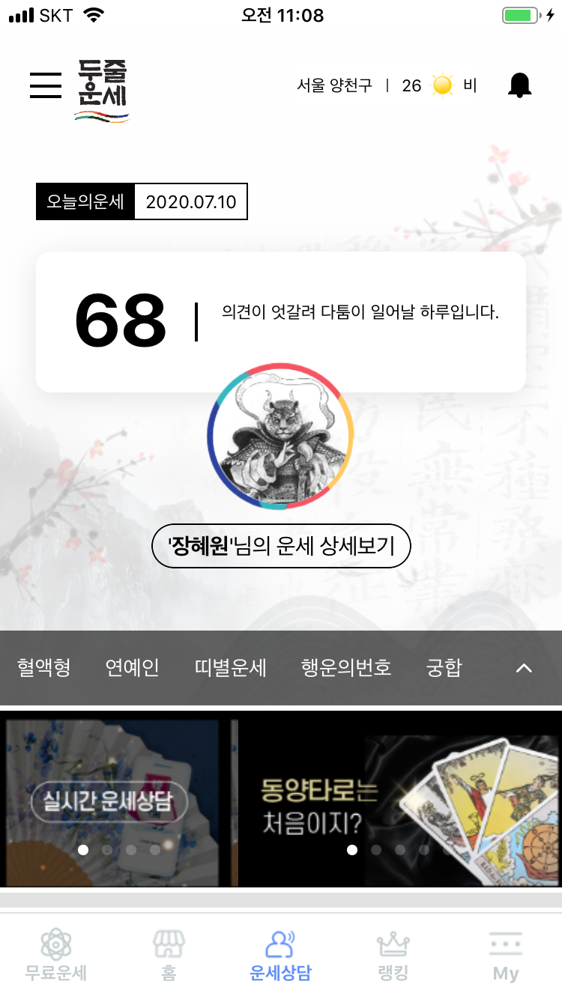

개요
- 목표: 운세 상담 및 전화상담 서비스 제공 App
- 규모: Android 1, iOS 1, web 1, back-end 1
- 역할: iOS 메인 개발
주요 기술
- Alamofire, Socket.IO-Client-Swift, Firebase, Kingfiser
- RxSwift, RxCocoa, RxGesture
주요 성과
- 메인 페이지 및 회원가입을 네이티브로 제작
- 그외 추가 상세페이지는 웹뷰로 이동
개요
- 목표: 1:1 실시간 동영상 채팅 지원 App
- 규모: Android 1, iOS 1, back-end 1
- 역할: iOS 메인 개발
주요 기술
- Alamofire, Socket.IO-Client-Swift, Firebase, SVPorogressHUD, Toask-Swift
- StoreKit IgaworksCore, AdPopcornOfferwall, TwilioVideo, AdBrixRemastered
주요 성과
- 채팅과 동영상채팅 등의 실시간 지원을 위한 소켓 통신 지원
- SNS 로그인 지원(페이스북, 구글, 카카오톡, 네이버)
- 광고 지원(Adbrix, Nas)
- 인앱 구매 지원
- 동영상 채팅은 Twilio를 사용해 지원
- 소켓통신을 통해 실시간 채팅, 음성채팅 요청 및 연결 실시간 지원
더스타 온라인(iOS/Web)
개요
- 목표: 더스타 매거진 공유를 위한 서비스
- 규모: Android 1, iOS 1, web 1, back-end 1
- 역할: iOS 메인 개발 및 web 개발
주요 기술
- typescript, Angular2
- swift, webview(webkit)### 주요 성과
주요 성과
- 적응형 웹페이지 제작을 통해, 리소스 효율화
- 공유하기와 같은 모바일 특화 기술의 모듈화를 통해 웹뷰 기반 앱제작 효율화
Enjoy J Tour(iOS/Web)
개요
- 목표: 일본 내 숙소 예약용 페이지 제작
- 규모: Android 1, iOS 1, web 2, back-end 1
- 역할: iOS 메인 개발 및 web 개발 서브
주요 기술
주요 성과
- 예약의 전반적인 기능 수행
- 모바일의 경우 푸시 지원 및 webview를 기반으로 제작
배운점
- 실제 서비스 론칭되지 못함
- 시험적인 서비스를 제작시 웹 개발의 효용성을 느낌
- 주요 기능을 한곳에서 제작해야 하는 필요성 확인
- 반응형 UI도 일부 필요하다는것을 느낌
Celebalarm
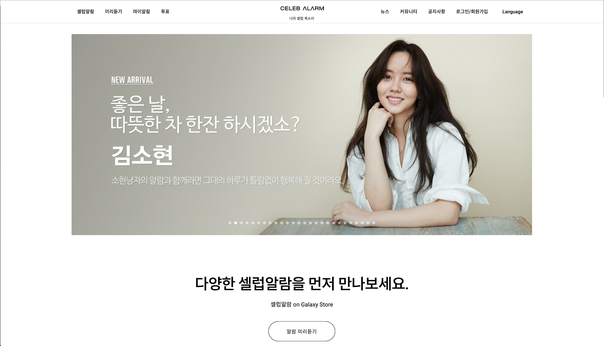

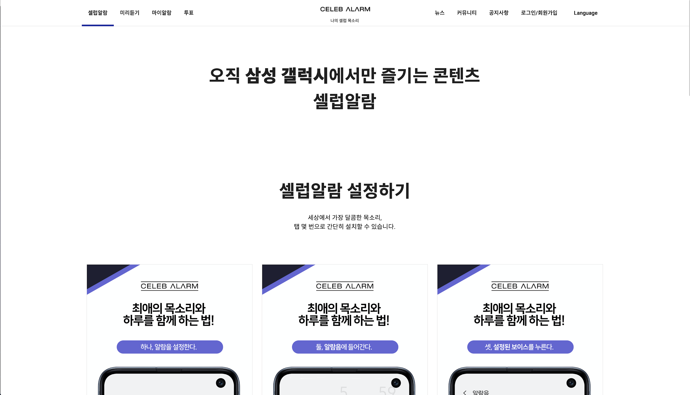

개요
- 목표: 삼성에서 제공하는 셀럽보이스의 소개용 마이크로페이지 제작
- 규모: Android 1, web 1, back-end 1
- 역할: web 개발 담당
주요 기술
주요 성과
- 마이크로페이지 제공
- 파이어베이스를 통한 유저 진입율 파악
배운점
- 웹개발의 흐름(ex. promise) 앱 개발과의 비슷한 방식을 파악
- typescript를 통한 개발 가능 확인
- 반응형 UI도 일부 필요하다는것을 느낌
개요
- 목표: 저작권 있는 유료이미지(스톡) 등록 및 판매
- 규모: Android 1, iOS 1, back-end 1
- 역할: iOS 메인 개발
주요 기술
- Alamofire, Firebase(Core, Messaging)
- MXParallaxHeader, MXSegmentedPager, Kingfisher
주요 성과
- 스마트폰에 있는 이미지 등록 지원
- 이미지 크기 조절을 위한 이미지 프로세싱 기능 지원
- 이미지 설명을 위한 태그 기능 지원
- 서버 부담을 줄이기 위해 최대 이미지 고정 및 자동 사이즈 조정
- 이미지별 사이즈에 맞게 보여주기 위한 이미지 리사이즈 리스트 반영 지원
시상식 투표앱
개요
- 목표: 각 시상식(더서울어워즈, 미스코리아, 서울가요대전, 소리바다, KPMA) 별 투표를 위한 앱 제작
- 규모: Android 1, iOS 1, back-end 1, designer 1
- 역할: iOS 메인 개발
주요 기술
- Alamofire, RealmSwift, Firebase- GoogleSignIn, TwitterKit, Facebook
- StoreKit, IgaworksCore, AdPopcornOfferwal
주요 성과
- Localizable 지원 (한국어, 영어, 중국어 간체/번체)
- 시상식 후반 100만건 이상 접속을 위한 서버 통신 최적화
- dev 모드에서 동일한 API를 1초내로 요청시 알럿을 노출/로그출력 하도록 제작
- Task관리를 통해 중복 요청시 마지막 요청만 동작하도록 제작
- 인앱 결제 지원, 광고 지원 (AdPopcorn, Adbrix, Tapjoy)
- 타 플랫폼과 포인트 교환을 위한 Scheme 지원
- UI의 변경을 쉽게 변경하기 위해 Design System화
- 공통 모듈화 진행
- Utils, Manager 모듈을 제작해 사용
- 파이어베이스 DB를 별도 구축해 실시간 인앱구매 내역 저장
개요
- 목표: 각종 시상식 앱과 연동해 포인트 교환 및 결제를 지원
- 규모: Android 1, iOS 1, back-end 1, designer 1
- 역할: iOS 메인 개발
주요 기술
- Alamofire, Kingfisher, Firbase(Core, Messaging, Crash), RealmSwift
- StoreKit, TabjoySDK, Igaworkscore, AdPopcornOfferwall
주요 성과
- Localizable를 통해 4개언어 지원(한국어, 영어, 중국어 간체/번체)
- sheet -> csv -> .strings -> enum 변경 스크립트 제작
- 안드로이드, iOS 키값 통일
- sheet 변경시 노티해 다음 앱 업데이트에 추가되도록 자동화
- 각종 시상식과 연계 가능한 Scheme 모듈화 진행
- 인앱결제 추가 및 인앱결제 재구매 프로세스 추가
- 인앱 결제시 누락되는 정보가 발생해 별도 저장 방식 추가
- 결제 시작 부터, 결제 완료전까지 내부 DB + FireStore에 정보 저장
- 전체 결제에 약 1%정도 발생하던 결제 누락을 0.1% 이하로 감소
새움테크
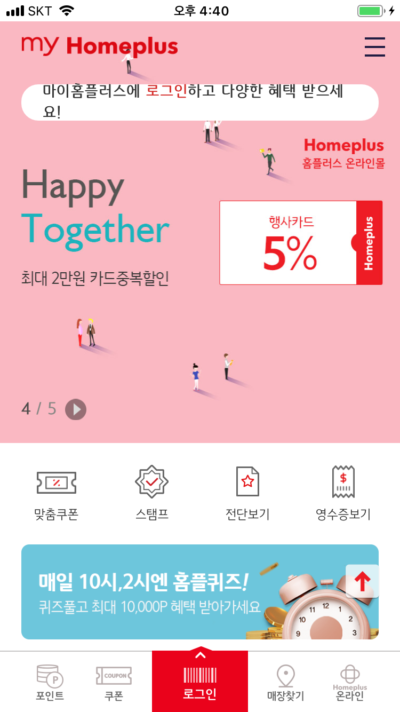
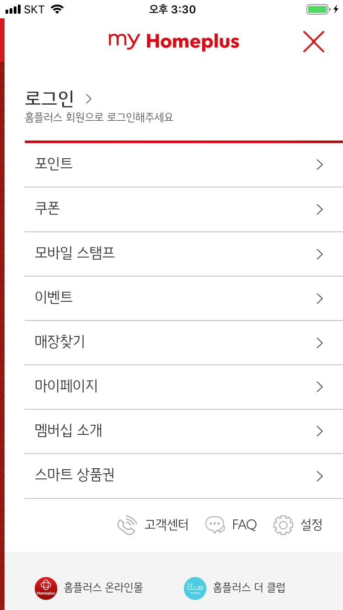

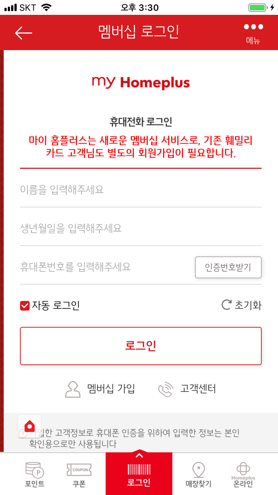
개요
- 목표: 홈플러스 사용 고객 마일리지 적립을 위한 서비스 App
- 규모: Android 1, iOS 1, back-end 2, web 1
- 역할: iOS 메인 개발 / 모바일 저장 방식 가이드 / API 디자인 리드
주요 기술
- AFNetworking, ZXingObjc, Firbase(Core, Messaging, Crash)
- Facebook(Core, Login, Share), Bolts, IgaworksCore
주요 성과
- 관리 용이성을 위해 Webview로 제작
- 마일리지 적립을 위한 바코드 리더 추가
- 모바일 통신을 처음 경험한 서버개발자와 API 구축
- 기초 20개 지원 후 10개 API 추후 추가
- 업데이트를 최소화 하기 위해 스마트폰에 데이터를 저장/읽기 기능 지원
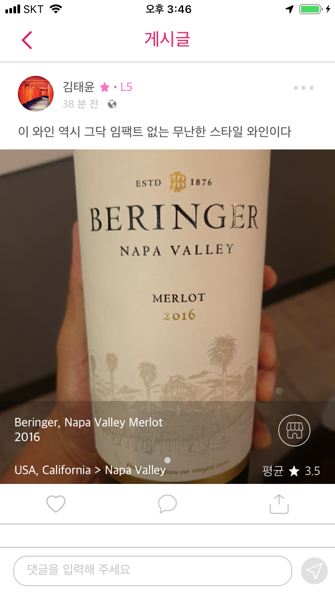
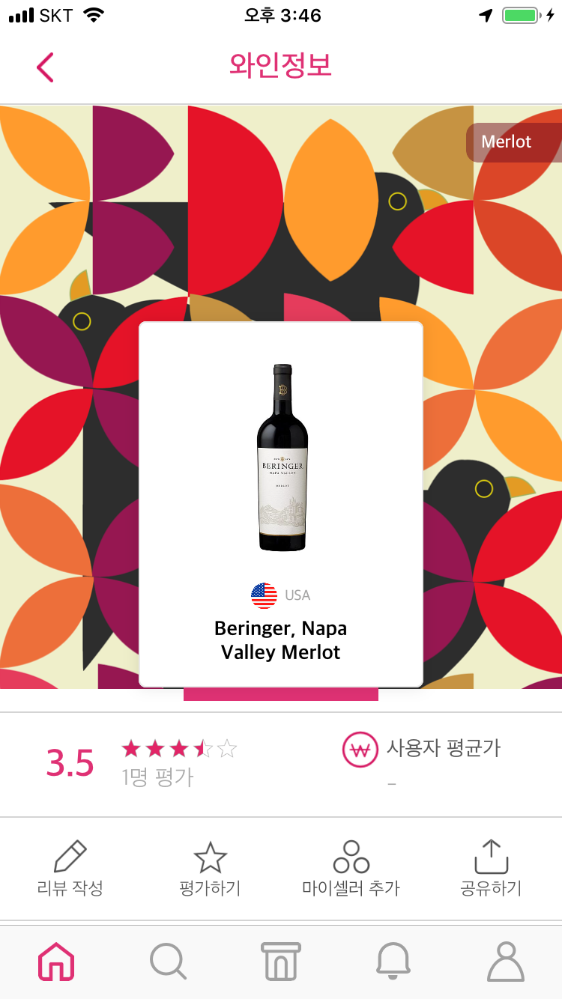
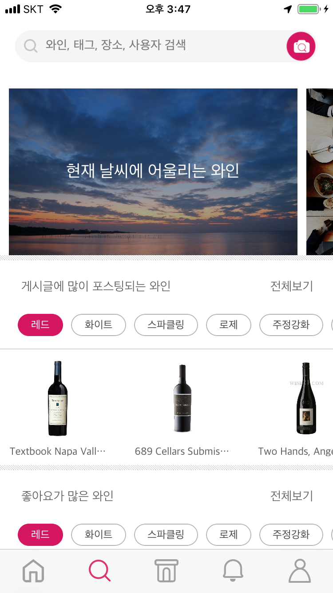
개요
- 목표: 와인 정보와 게시물을 확인할 수 있는 와인 SNS 종합 정보 앱
- 규모: Android 1, iOS 1, design 1, back-end 1
- 역할: iOS 메인 개발
주요 기술
- AFNetworking, Firbase(Core, Messaging, Crash)
주요 성과
- 다운로드 1만회 달성
- SNS 로그인 지원
- SNS 게시글 빠른 로드를 위해 API통신 추가 개발
- 페이스북과 인스타그램의 장점만을 종합한 앱
- 와인 라벨 스캔을 통한 검색 기능 지원
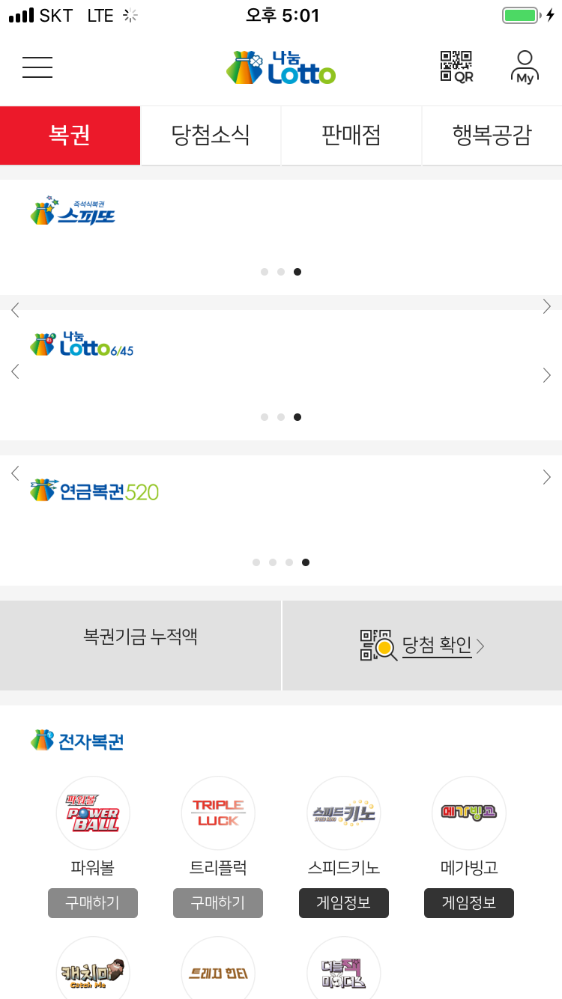


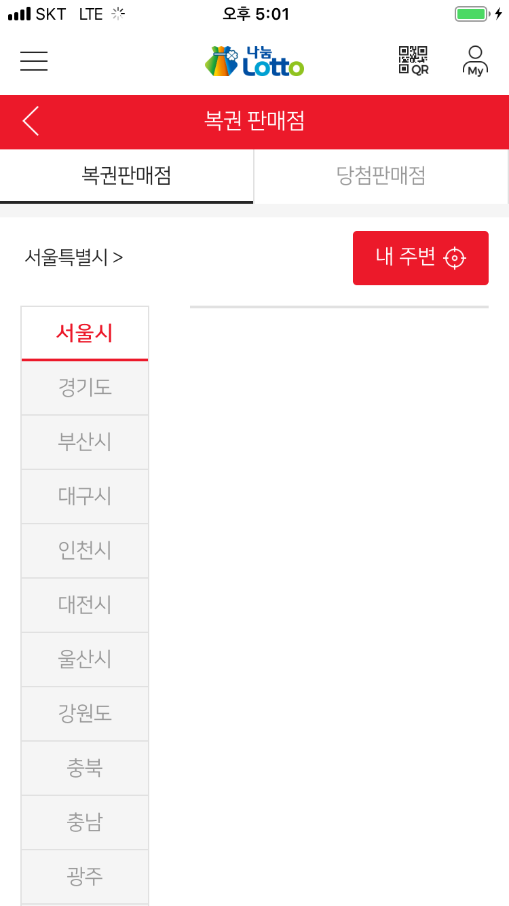
개요
- 목표: 나눔로또 당첨 확인 및 GPS기반 판매점 정보 지원
- 규모: Android 1, iOS 1, web 2, back-end: 1
- 역할: iOS 메인 개발
주요 기술
- AFNetworking, Realm, Firbase(Core, Messaging), MXParallaxHeader
주요 성과
- 서버 부하를 방지하기 위해 앱에 페이지 정보 데이터 저장
- 업데이트를 통해 웹페이지 데이터 다운로드 및 변경 지원
- QR Reader를 통해 복권 당첨여부 실시간 확인 가능
- 복권 판매점 정보를 스마트폰에 저장을 위해 Realm 사용
- 현재 위치 좌표 수신 및 실시간 사용
- Git을 통한 프로젝트 공유
현대라이프 상담사용
개요
- 목표: 현대라이프 상담사용 모바일/태블릿 어플리케이션 제작
- 규모: Android 1, iOS 1, back-end: 3, web 2, design 1
- iOS 메인 개발자 (참여 인원 : iOS 1)
주요 기술
- AFNetworking, Realm, Firbase
- SVProgressHUD, ZBarSDK, SDWebImage, SDVersion
- MDM, AppIron, INISAFE, MVaccine, MTransKey
주요 성과
- 보안 라이브러리 다수 사용
- iPhone/iPad 사이즈 모두 지원 (각각의 스토리보드로 구현 후 지원)
- Enterprise 계정을 사용한 앱 공유
- 공인인증서 지원
- 웹 + 네이티브 병합된 형태로 script통신 지원
- 프로젝트 이전 개발자가 1달 개발 후 나가 이어서 작업 시작
- Firebase Crashlytics 지원으로 앱 크래시 체크
- 실시간 디버깅을 위해 디버그 모드 및 로그 출력 화면 추가 지원
개요
- 목표: CJ One 카드 메인탭(5페이지) 리뉴얼
- 규모: Android 1, iOS 1, PM 겸 기획자 1, back-end 1, 디자이너 2
- 역할: iOS 메인 개발
주요 기술
- Objective-c, WebView, Deeplink, APNs
- Server-Driven UI, Firebase, Mobile application Accessibility
주요 성과
- 앱 모바일 접근성을 위한 UI배치, 가이드 문구 연결, 포커싱 지정
- 서버드리븐한 홈 구성을 위한 다이나믹 UI 적용
- 디자인 가이드 정의를 통한 값 변경 유동성 제공
- 버튼마다 Firebase Analytics 전송을 위한 컴퍼넌트 정의
- 그외 페이지는 관리 용이성을 위해 웹뷰를 사용
- 애니메이션, 속도 향상에 중점적 작업
- Voice Over 기능 확인
아주캐피탈
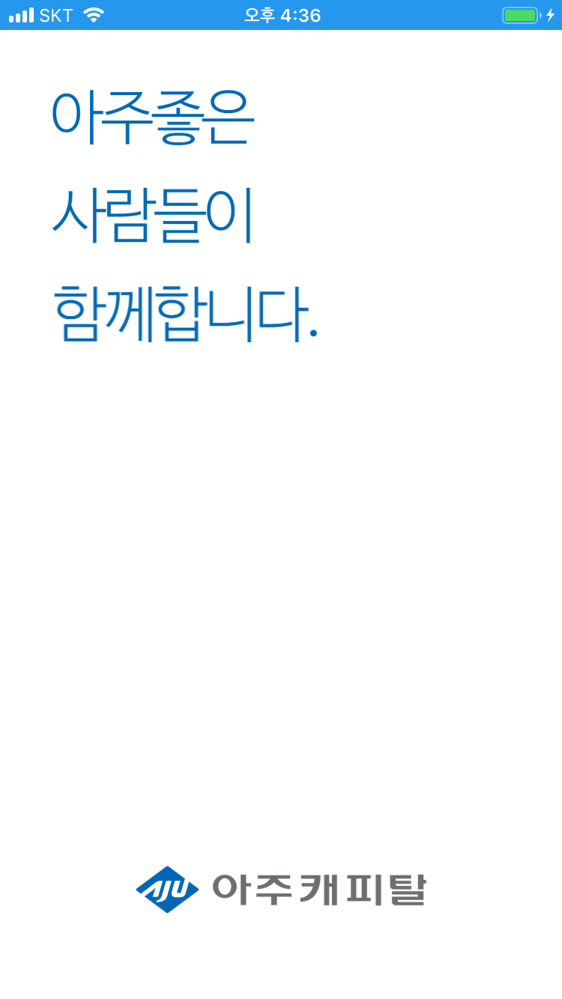
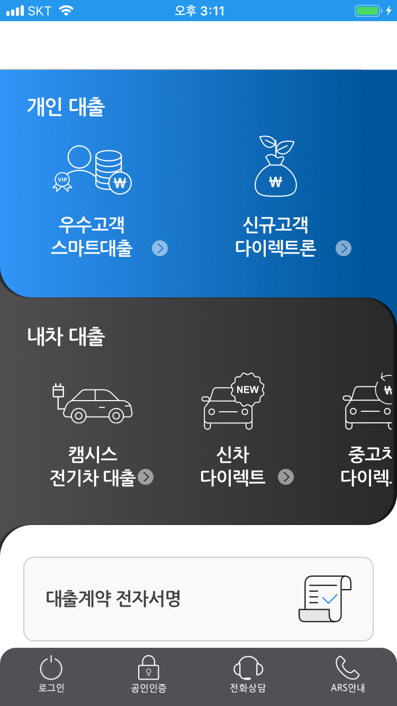

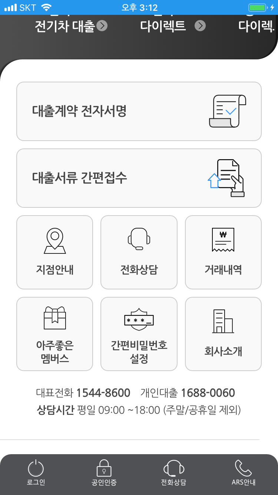
개요
- 목표: 유저 서비스 마이그레이션 및 내부 직원용 앱 개발
- 규모: Android 1, iOS 1, web 2, back-end 2
- 역할: iOS 메인 개발
주요 기술
- Sanne, NAppProtect, MDM, NFilter, SmartAIBFramework
- KWPki, MagicSE, MagicXSign, MagicMRS
주요 성과
- 아주캐피탈 리뉴얼과 아주캐피탈 직원용 앱 개발
- 직원용의 경우 Enterprise 계정을 통해 내부 배포
- 관리의 용이성을 위해 Webview 사용률을 높임
- 페이지별 관리를 위한 App <-> Web간의 페이지 일원화
- 은행권 앱이기에 다양한 보안 모듈 사용 경험
- 와이파이가 지원되지 않아 폐쇄적인 상황에서도 정상적인 개발 실시
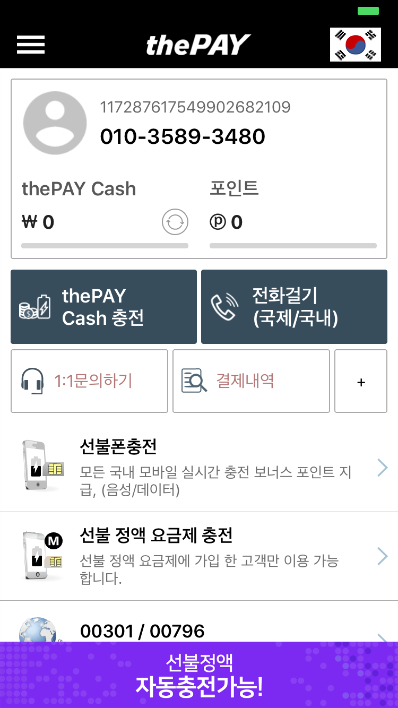

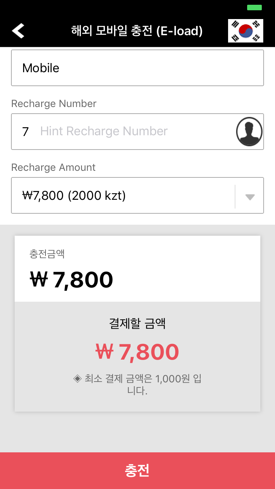

개요
- 목표: 국내외 사용자 해외전화 서비스 제공
- 규모: Android 1, iOS 1, Back-end 1
- 역할: iOS 메인 개발자
주요 기술
- Objective-c, WebView, APNs, AFNetworking, Localizable
주요 성과
- 13개 언어 지원을 위해, 화면 노출 시점에 문구 설정
- 디바이스 언어 외에도 직접 변경이 가능하도록 shared 한 언어 설정값 사용
- sheet -> Strings.localizable 변경되는 스크립트 생성
- Strings.localizable -> enum 자동 변경되는 스크립트 생성
- (파일을 통한)모듈화로 앱간의 통일성 향상
- 하단 유동 배너 광고 지원
개요
- 목표: 엘리시안 강촌/제주 예약 및 실시간 스키장 확인 기능 제공
- 규모: Android 1, iOS 1, web 1, Back-end 1
- 역할: iOS 메인 개발자
주요 기술
- Objective-c, WebView, APNs, AFNetworking
주요 성과
- CCTV를 통해 스키장 현재 상태 확인 가능
- 숙소 예약의 경우 외부 결제 지원
- 네이티브와 웹의 병합된 형태- APNS 푸시 지원
유니텍
MFCC(Multi Function Control console)
개요
- 목표: 선유도 어뢰 컨트롤 콘솔 제작
- 규모: 3인 개발
- 역할: UI 와 인터페이스 데이터 연결
주요 기술
주요 성과
- 모의 전투를 위한 시뮬레이션 기능 제공
- 유속, 방향, 레이더, 어뢰 속도 등의 추가 정보 화면에 표시
- 연결 선의 최적 길이 및 속도 확인 가능
- 인터페이스 연결 및 실시간 반영 속도 최적화
- 진해 국방과학연구소에서 2달이상 파견 근무
- 독일 어뢰 업체로부터 기술 자문 ( 업체명은 극비 사항 )
- 실제 어뢰발사를 위해 바다에서 테스트
- 발사한 위치와 현재 발사체와의 거리 추가 기능 지원
- 관련 뉴스
강원대학교 전산원
개요
- 목표: 강원대학교 전산원이 제공하는 대표 앱 제작(포탈 정보 제공, 식당 메뉴 정보 제공, 셔틀버스 정보 제공 등)
- 규모: Android 1, iOS 1, Back-end 1
- 역할: Android 메인 개발
주요 기술
주요 성과
- 1만회 이상 다운로드
- Native 제작 및 유지보수, 추후 Flex Moblie로 변경 시 어시스턴스
- 위치좌표, 암호화, 내부 DB, API
- 안드로이드 디바이스 8가지 최소 지원
- 뉴스 링크
리딩 경험
Client 팀 팀장
개요
- 팀원: Android 3, iOS 3, web 4
- 기간: 2024.10 ~ 2024.12
주요 성과
- web파트 워크플로우 개선
- web파트 CI/CD 사용량 개선
- Jira Cloud 자동화
App팀 팀장
개요
- 팀원: Android 3, iOS 3
- 기간: 2023.09 ~ 2024.10
주요 성과
- 2024년 하반기
- 속도 + 단순화: TBD 도입, 배포열차 도입, Jira Cloud 자동화
- 속도 + 안정성: 피쳐플래그 도입, 에러 처리 결정
- 단순화 + 안정성: Tuist 적용
- 속도 + 안정성 + 단순화: 모듈 분리(TMA)
- 관련 블로그
- 2024년 상반기
- 속도 향상: cocoapods -> SPM, Swift UI 적용, TBD 적용
- 안정성 향상: TDD 적용
- 원활한 공유: 테크스팩 작성, 배포 공유 자동화, 프리뷰
- 2023년 하반기
- 프로세스 개선: 브랜치 룰 개선, CI/CD 개선
- 아키텍처 개선: MVVM(MVI에 가까운), 클린아키텍처
- 모듈화: 계층 분리, 기능별 배포
- 데이터 수집 강화: GA강화, CI/CD 데이터 수집
- 관련 블로그
기타
- 월 1회 1:1 진행
- 개인별 목표 설정 및 평가 진행
- TIL(Today I Learned) 공유 진행
- 데일리 스탠드업 미팅 진행
iOS 파트 매니져
개요
- 팀원: iOS 3
- 기간: 2022.09 ~ 2023.09
주요 성과
- ReactorKit 적용을 통한 화면 인터페이스 공유
- 커스텀 브랜치 룰에서 Git Flow 적용
- CI/CD 중 빌드테스트, 배포 타이밍 결정 주도
- 내부 배포 자동화


 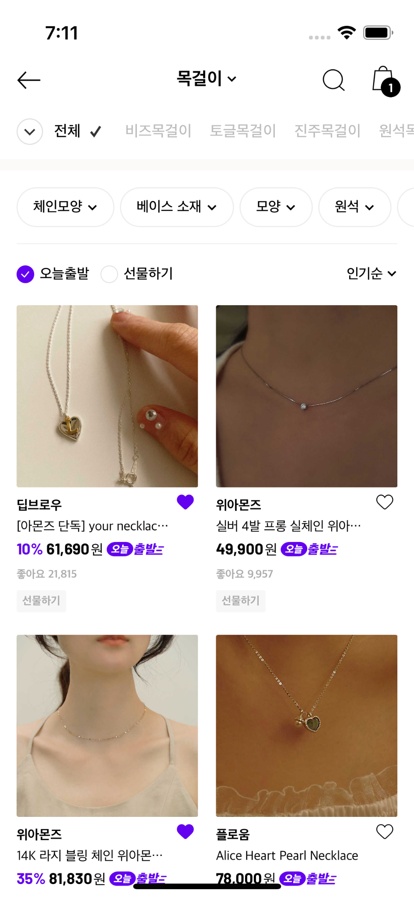
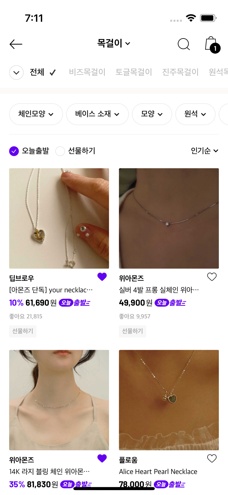


 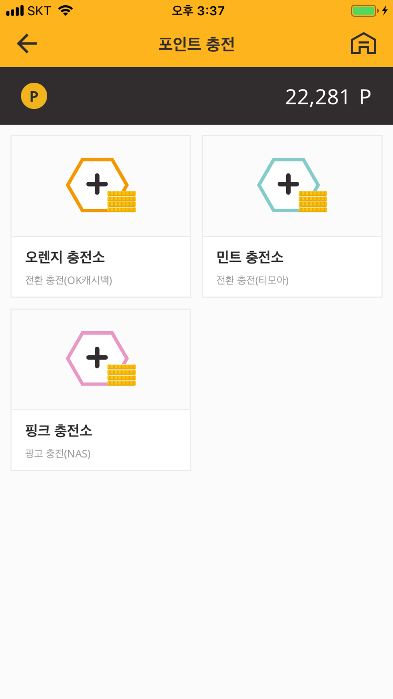
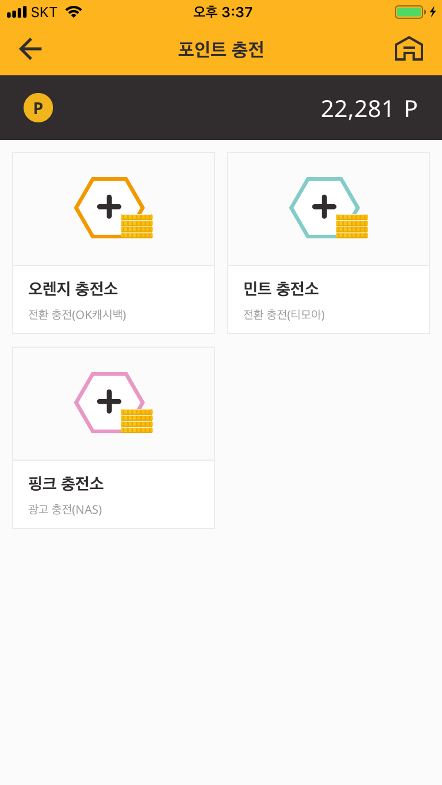


 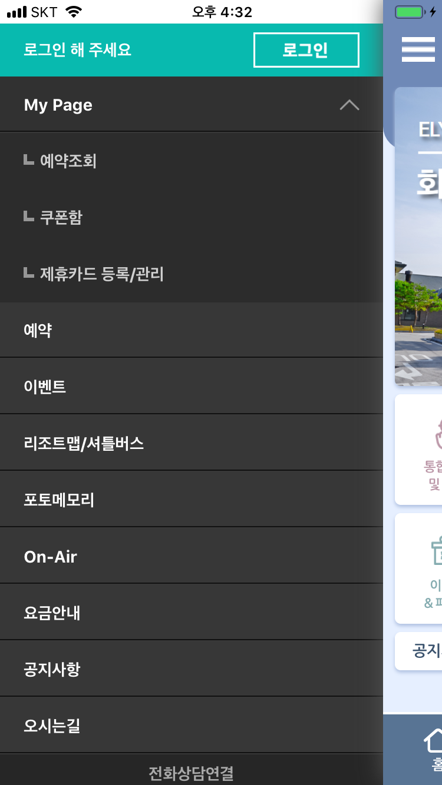
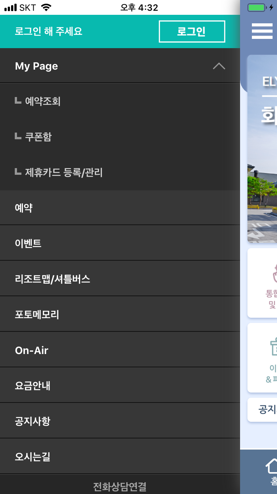